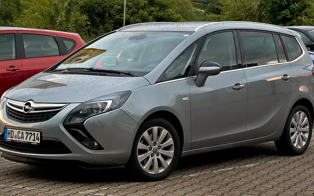

Par Motor › Precios por modelo › Opel Zafira
Precio de segunda mano · noviembre de 2026¿Cuánto vale un Opel Zafira de segunda mano?

Precio justo estimado de un Opel Zafira usado en España, año por año, con los kilómetros normales para su edad y en buen estado: de 4.100 € a 47.900 €. Para tasar el tuyo con sus kilómetros reales y su estado, usa el tasador gratis.
Precios del Opel Zafira por año
Zafira B (2005–2014)
Precio de nuevo: 1.6 105 CV, 20.000 € · 1.9 CDTi 120 CV, 23.500 € · 1.8 140 CV, 22.000 €
| Año | Km normales | 1.6 105 CV · Gasolina | 1.9 CDTi 120 CV · Diésel | 1.8 140 CV · Gasolina |
|---|---|---|---|---|
| 2014 | 100.000 km | 8.200 € | 9.400 € | 9.000 € |
| 2013 | 100.000 km | 7.700 € | 8.700 € | 8.400 € |
| 2012 | 100.000 km | 7.100 € | 8.100 € | 7.800 € |
| 2011 | 100.000 km | 6.500 € | 7.400 € | 7.200 € |
| 2010 | 100.000 km | 6.000 € | 6.900 € | 6.600 € |
| 2009 | 100.000 km | 5.600 € | 6.400 € | 6.100 € |
| 2008 | 100.000 km | 5.200 € | 5.900 € | 5.700 € |
| 2007 | 100.000 km | 4.800 € | 5.400 € | 5.200 € |
| 2006 | 100.000 km | 4.400 € | 5.000 € | 4.800 € |
| 2005 | 100.000 km | 4.100 € | 4.600 € | 4.500 € |
Zafira Tourer (2011–2019)
Precio de nuevo: 1.4 Turbo 140 CV, 25.000 € · 2.0 CDTi 130 CV, 28.000 € · 1.6 Turbo 170 CV, 28.000 €
| Año | Km normales | 1.4 Turbo 140 CV · Gasolina | 2.0 CDTi 130 CV · Diésel | 1.6 Turbo 170 CV · Gasolina |
|---|---|---|---|---|
| 2019 | 100.000 km | 12.200 € | 14.800 € | 13.700 € |
| 2018 | 100.000 km | 11.800 € | 14.500 € | 13.200 € |
| 2017 | 100.000 km | 11.400 € | 14.200 € | 12.800 € |
| 2016 | 100.000 km | 11.000 € | 13.200 € | 12.400 € |
| 2015 | 100.000 km | 10.600 € | 12.200 € | 11.900 € |
| 2014 | 100.000 km | 10.200 € | 11.200 € | 11.500 € |
| 2013 | 100.000 km | 9.600 € | 10.400 € | 10.700 € |
| 2012 | 100.000 km | 8.800 € | 9.600 € | 9.900 € |
| 2011 | 100.000 km | 8.200 € | 8.900 € | 9.100 € |
Zafira Life (2019–hoy)
Precio de nuevo: 1.5 Diesel 120 CV, 38.000 € · Zafira Electric 136 CV, 55.000 € · 2.0 Diesel 150 CV, 42.000 €
| Año | Km normales | 1.5 Diesel 120 CV · Diésel | Zafira Electric 136 CV · Eléctrico | 2.0 Diesel 150 CV · Diésel |
|---|---|---|---|---|
| 2026 | 10.000 km | 37.400 € | 47.900 € | 41.300 € |
| 2025 | 30.000 km | 31.400 € | 40.200 € | 34.700 € |
| 2024 | 50.000 km | 29.000 € | 37.200 € | 32.100 € |
| 2023 | 70.000 km | 26.800 € | 34.400 € | 29.700 € |
| 2022 | 90.000 km | 22.800 € | 31.700 € | 25.200 € |
| 2021 | 100.000 km | 20.800 € | 28.200 € | 23.000 € |
| 2020 | 100.000 km | 20.500 € | 24.400 € | 22.700 € |
| 2019 | 100.000 km | 20.100 € | 22.800 € | 22.300 € |
Kilómetros normales: 15.000 al año en gasolina, híbridos y eléctricos, y 20.000 en diésel, con un máximo de 100.000 km (por encima no tasamos: el precio depende demasiado del historial de cada coche). Cifras redondeadas a 100 €.
Preguntas frecuentes
¿Cuánto vale un Opel Zafira de segunda mano?
Según el año, la versión y los kilómetros, un Opel Zafira usado vale hoy de 4.100 € a 47.900 € en España. El más barato de nuestra tabla es un 1.6 de 2005 (4.100 €) y el más caro un Zafira Electric de 2026 (47.900 €). Son precios justos estimados entre particulares y profesionales, con los kilómetros normales para su edad y en buen estado.
¿Cuánto valor pierde un Opel Zafira al año?
Con unos años encima, un Opel Zafira pierde alrededor de un 10 % de su valor cada año (calculado sobre el 1.5 Diesel de la generación Zafira Life). Los primeros años la caída es mayor y a partir de los 70.000 km se acelera.
¿Qué motorizaciones tiene el Opel Zafira?
En nuestra base de datos hay versiones gasolina, diésel y eléctrico, en 3 generaciones: Zafira B, Zafira Tourer y Zafira Life.
¿Cómo sé si me piden demasiado por un Opel Zafira?
Abre el tasador de Par Motor, elige el Opel Zafira, el año y los kilómetros reales, y escribe lo que te piden. Te diremos si está por debajo del precio justo (chollo) o por encima (caro). Es gratis y no pide registro ni matrícula.
Otros Opel
Compara su coste real
El precio de compra es solo una parte. Mira cuánto te costaría al mes con combustible, seguro, neumáticos, mantenimiento y lo que pierde de valor.
Abrir el comparador →